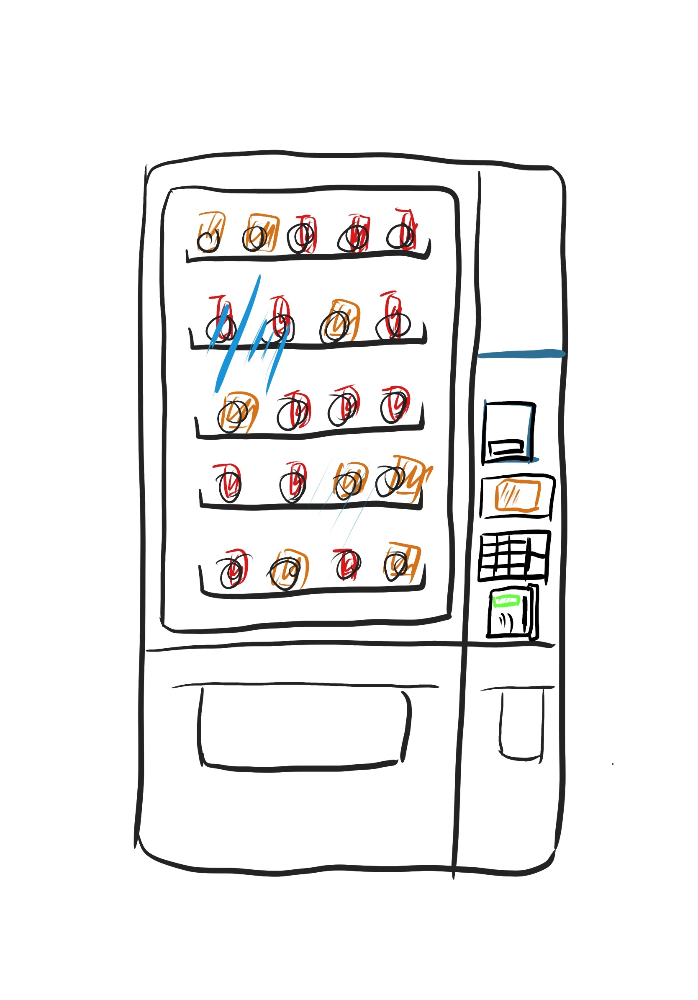

Vending Machine
Vending machines are very common in our lives. Think back to the last time you used a vending machine and what comes to mind? The item you wanted most was sold out? Money being swallowed or inconvenient to use? Or can't remember anything about it?
This is a project about vending machines.
This project will show you my observations of the people who use vending machines, interviews with them, research on vending machine users and on the vending machines themselves. It may be superficial, but hopefully you will get something.
Annotated sketch
The snack vending machine allows users to self-purchase snacks by simply paying and entering a serial number on the keyboard. It tries to make snack buying easier.

ring: will operate after a successful transaction to drop your item down
the first "box" at the right of the vending machine: the place to put bills in. Has an instruction “Insert Bill Here”
the second "box" at the right of the vending machine: A screen to show your process. Has an initial instruction “Press Selection for information” and also shows nine grid keys and a hand. After the user presses the item serial number below the keys, it will show the number the user input, then the money deposit, then a “machine accepts card” instruction. After your card has been accepted, it will show “processing”,
then “vending” to indicate the current progress.
the third "box" at the right of the vending machine: A keyboard contains keys from 0 to 9 (for input item serial number), a “*”, a “#”, a key for change, and a “C”.
the last "box" at the right of the vending machine: A card swiper with a small screen has initial instructions “swipe or tap to begin”, and “accept credit or debit card”. After the swipe or tap, its screen will show “please select your item”.
the left below box of the vending machine: The place to pick up items. Items will be dropped here.
the right below box of the vending machine: The place to pick up the change. Change (coins) will be dropped here.
Observations and interview summaries from 3 users
User 1
1. Slowly walked to the machine and stop.
2. Looked at the items inside the machine for a while.
3. Bent down and straightened up again.
4. Pulled out the phone and looked up at the machine from time to time during the use of the phone.
5. Put down the phone and looked at the machine again.
6. Entered the serial number on the keyboard, and then tap the card at the card swiper.
7. (the item didn’t drop) Entered the serial number again.
8. kept an eye on the item when it is dropping.
9. picked up the item after the item finished dropping.
10. Went away.
User 2
1. Walked to the machine.
2. Looked at the items for a while.
3. Took out the card and kept watching.
4. Entered the serial number, waited.
5. (the item didn’t drop) Waited. Put the card near to the card swiper again, but didn’t swipe or tap. Took the card back and paced back and forth.
6. (the screen above the keyboard showed the transaction is closed) Tap the card again, and then entered the serial number.
7. (the machine dropped the item).
8. Picked up the item, and wait for the screen above the keyboard to went back to the initial state which showed “swipe or tap to begin”.
9. Went away at a slow pace.
User 3
1. Walked to the machine quickly and directly.
2. Pressed the item number.
3. Swiped the card.
4. (the item didn’t drop) Knocked the machine.
5. Pressed the item number again and swiped the card again.
6. (the item dropped).
7. Picked the item up.
Interview Questions
- How strong is your desire to buy something?
One user said he already has a target he wants to buy, the other two said they just came to the machine see if they want to buy anything.
- Did you encounter any frustration in the selection process? If so, where? One user said she wanted to see some items’ calories but didn’t. The other two said no.
- Did you have any trouble with the payment process? if so, where? All of them mentioned they are confused about which of the “swipe or tap card”, and “input the serial number” should go first.
- Would you use the vending machine again? All of them said yes.
Persona
A "image" of users
Amy is a person who is not in a hurry, she wants to look around to see if there is something she wants.
The interface problem Amy is facing is she think she should first input the serial number of the item she want, and then make the payment, but she is wrong.
This persona mainly come from the first two users, their behavior shows that they are not in a hurry.
.
Bob is going to take an exam in 20 minutes, he is in a hurry and wants to eat something for dinner before the exam.
Bob faced the same problem with Amy.
This persona mainly come from the third users, his behavior shows he is in a hurry.

StoryBoard
This storyboard is for persona 1. Except the first image with the arrow indication, the reading order is from left to right, from top to down.